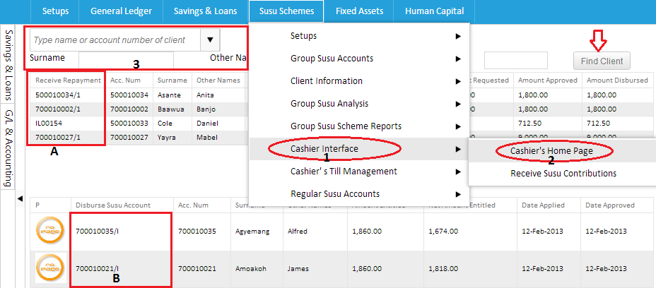

The cashier homepage is where the cashier performs transactions such as disbursements and receive repayments.It can be assessed by clicking on the susu scheme,follow the drop down to cashier interface and locate cashier's homepage.Type in the clients surname or name to find and proceed by clicking find client.That particular clients details will be retrieved.You can click the number below either "Receive repayment" or "Disburse susu account" to perform preferred transaction as shown in the image below.

Created with the Personal Edition of HelpNDoc: Create iPhone web-based documentation